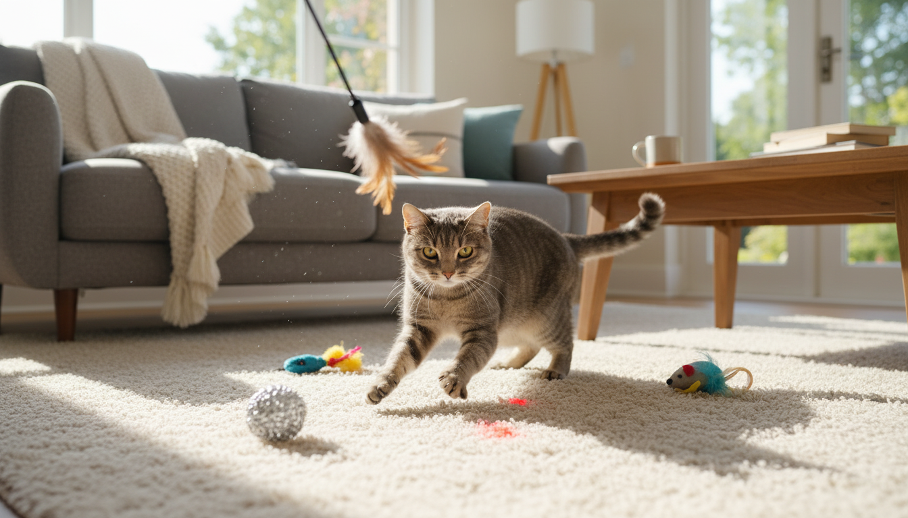
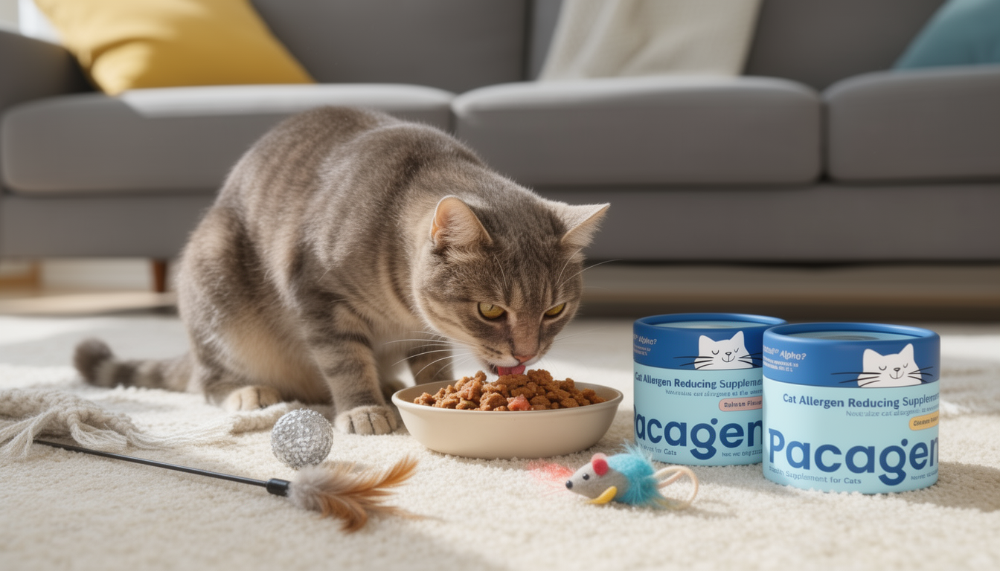

When we first brought Mochi home, I thought the hardest part would be the adjustment, learning her habits, figuring out her food, and accepting that nothing in our house would ever be truly hair-free again.
I didn't expect how much she would quietly change the way we lived.
Mochi came into our lives before kids, before packed calendars, before the feeling that every day was already full before it even started. Back then, the apartment was smaller and our routines were loose. She slept wherever she wanted. She followed us from room to room. She made the place feel settled in a way I hadn't realized I was missing.
What I didn't fully appreciate at the time was that not everyone in our home experienced her the same way.

The Allergies We Normalized
My partner has always been a little allergy-sensitive. Nothing dramatic. No emergency room visits or obvious reactions. Just the lingering kind of discomfort that never fully goes away. A stuffy nose that hangs around. Eyes that water more often than they should. The kind of thing that's easy to downplay and even easier to normalize.
So that's what we did. We normalized it.
The Adjustments You Don't Notice at First
Over time, small rules appeared without discussion. The bedroom door stayed closed. Certain blankets were washed more often than others. Windows stayed cracked open even when the weather didn't really call for it.
Mochi adapted without complaint. She found new favorite spots. She learned which rooms were off-limits. She still curled up near us, just not quite as close.
My partner never complained either. He smiled and said it was fine. I didn't push.
It all felt reasonable. Manageable. Just part of living with both a cat and another human you care about.
But slowly, I started noticing the moments in between. The pause before he sat on the couch. The way he'd rub his eyes and then change the subject. The distance he kept from the places Mochi loved most.
None of it felt big enough to act on. But it added up.
We Tried to Control the House
Like most pet owners trying to be responsible, we focused on the environment. Cleaning became a constant background task. Vacuuming. Wiping surfaces. Washing fabrics more frequently than seemed necessary.
We bought air filters. Changed routines. Rearranged furniture. Told ourselves that if we stayed on top of it, things would eventually feel easier.
It helped, in the way effort usually helps. Marginally. Temporarily.
What I didn't understand then was that we were always reacting, addressing discomfort after it had already spread through the house. No matter how clean things looked, something lingered.
Learning What Was Actually Happening
It wasn't until much later, while reading about pet health and indoor air quality, that something clicked.
Cat allergies aren't caused by fur itself. They're primarily caused by a protein cats naturally produce, called Fel d 1, which spreads easily through saliva and skin. Once it's in the environment, it's hard to chase down completely.
That reframing shifted how I thought about everything. We weren't failing at cleaning. We were just focused on the very last step of a much longer chain.

A Small Change That Fit Into Real Life
Around that time, I started seeing more conversations about supporting cats from the inside out, specifically through diet and supplements designed to reduce active allergens at the source.
One name that kept coming up was Pacagen's Cat Allergen Reducing Supplement. I didn't think of it as a solution so much as an experiment, something small I could try without changing our routines. I mixed it into Mochi's food, and then mostly stopped thinking about it.
There were no new rules to enforce. No changes to her behavior. No added stress. It simply became part of the background, the way most sustainable routines do.
What Changed Was Quiet But Real
There wasn't a single moment where everything suddenly felt different. Instead, life became easier in small ways.
My partner stayed in shared spaces longer. Mornings felt lighter. I stopped noticing the low-level tension I'd grown used to carrying.
Mochi was still herself. Curious, stubborn, always nearby. She still claimed the couch. She still followed us down the hallway. Nothing about her changed.
What changed was the quiet math we'd been doing in our heads, constantly balancing comfort, care, and compromise.
Living Together, a Little Better
Living with a pet means adjusting. Most of the time, those adjustments are worth it. Some of them we accept without ever questioning.
But every once in a while, it's worth pausing to ask whether the discomfort we've normalized actually needs to be there.
For us, understanding what was happening and making a small, supportive change meant no one had to quietly give something up anymore.
And that made our home feel like home again.